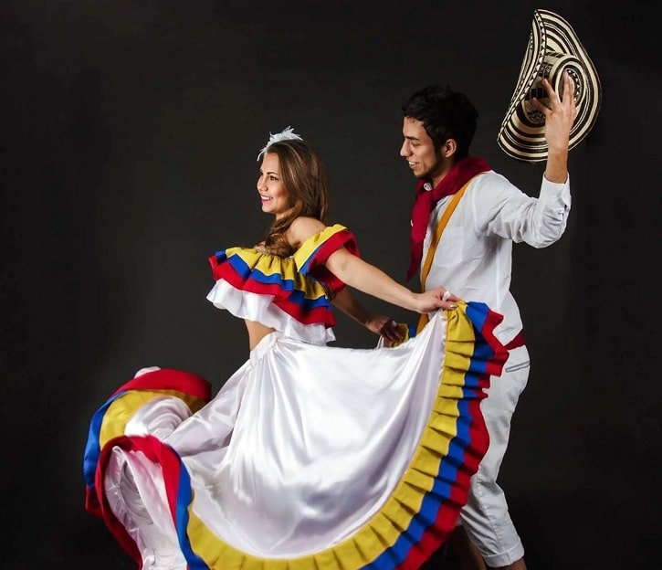
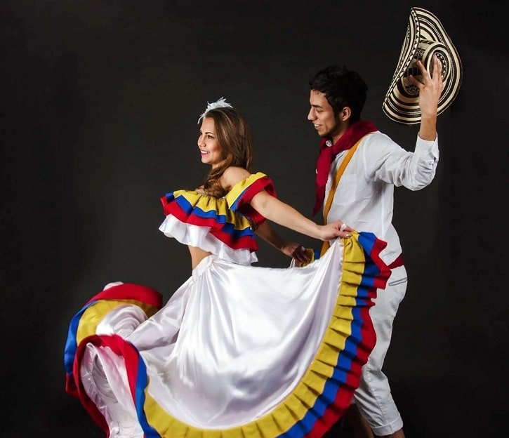
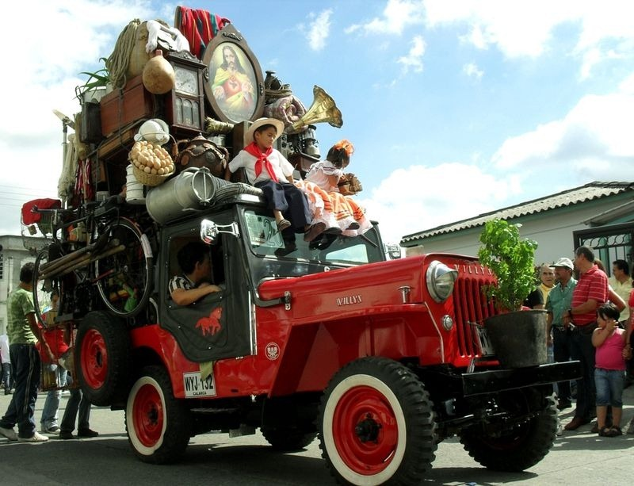
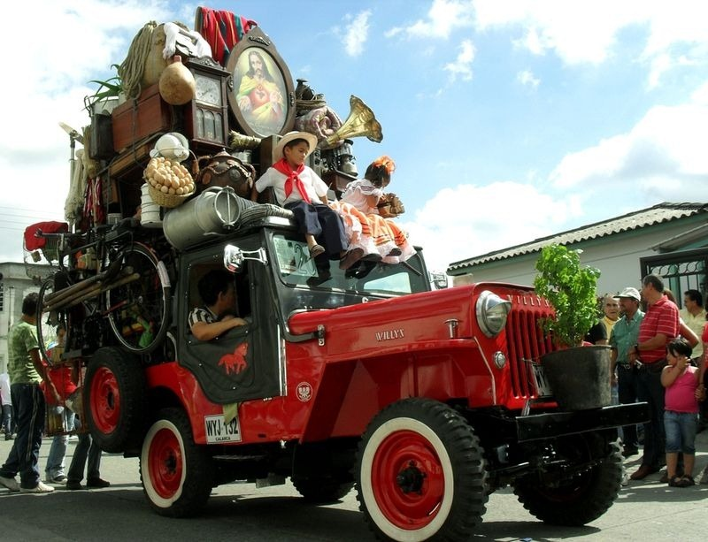

Colombian culture can consist of many traditions such as la Feria de Flores which is a flower Festival that is held in Medellin Colombia. La Feria de flores can consist of many locally sourced flowers from all over Colombia and they are very colorful, many people who walk around in the fesitval wear cultural clothing such as el Traje De Cumbia which is a colorful dress that Women wear and the men wear ponchos with the Colombian Sombrero. Colombian Culture can consist of el cafe Juan Valdez which is coffee made in Colombia, then theres the Yipao festial which can include all types of Jeep models that are full of Colombian items inside the car such as Coffee, and Sombreros Colombianos.
 

 
